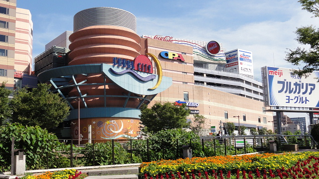

福岡の観光
キャナルシティ博多
「都市の劇場」というコンセプトの下、市街地再開発事業として1996年に開業した日本初の本格的な複合商業施設。福岡の街に新しい人の流れを創出し、街づくりのモデルとして国内外より注目を集め続けています。南北に流れる運河（キャナル）を中心に広場や噴水、植栽や装飾が広がり、施設内を回遊しながら多彩な都市機能を体験することができるエンターテイメント空間として幅広い層の支持をいただいています。2011年9月に「今の時代にふさわしい『バリュー＆エンターテイメント』の提供」をテーマにイーストビルを増床オープンさせ、福岡都心のさらなる回遊性向上を目指します。
マリンワールド

1989年4月に開館し、1995年4月に改装・増築された。「対馬暖流」をテーマに熱帯から温帯、寒帯の魚350種類20,000点を暮らしぶりそのままに見ることができる。館内には、魚類の他にイルカ、ゴマフアザラシ、ラッコ、ウミガメなどが展示されている。イルカ・アシカショーや巨大なシロワニが泳ぐパノラマ大水槽が目玉である。2000年より夏休み期間を中心に夜間営業を行っている。1994年に博多湾に漂着したメガマウス(メス)のホルマリン標本が展示されている。
櫛田神社

博多祇園山笠が奉納される神社で、飾り山笠が一年中展示されています。博多っ子からは「お櫛田さん」の愛称で親しまれている，博多の総鎮守です。祭神は正殿に大幡主命（櫛田宮）・左殿に天照皇大神（大神宮）・右殿に素戔鳴尊（祇園宮）の三神で拝殿には３つの鈴が並んでいます。
太宰府天満宮

太宰府天満宮は、菅原道真公の御墓所の上にご社殿を造営し、その御神霊を永久にお祀りしている神社です。 「学問・至誠・厄除けの神様」として、日本全国はもとより広く世のご崇敬を集め、年間に約800万人の参拝者が訪れています。
福岡タワー

福岡タワーは平成元年に福岡市制100周年を記念し開催された「アジア太平洋博覧会（よかトピア）」のモニュメントとして建てられました。海浜タワーとしては日本一の高さ全長234ｍを誇り、8000枚ものハーフミラーで覆われた正三角形の洗練された外観は「ミラーセイル」の愛称で親しまれております。地上123メートルにある最上階の展望室からの眺めは格別で、福岡市街とウォーターフロントを360度のパノラマで一望できます。
Designed by CSS.Design Sample